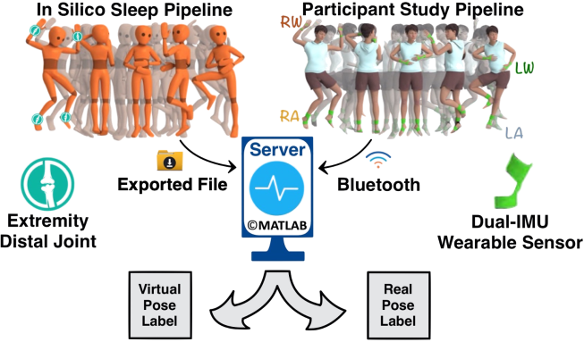
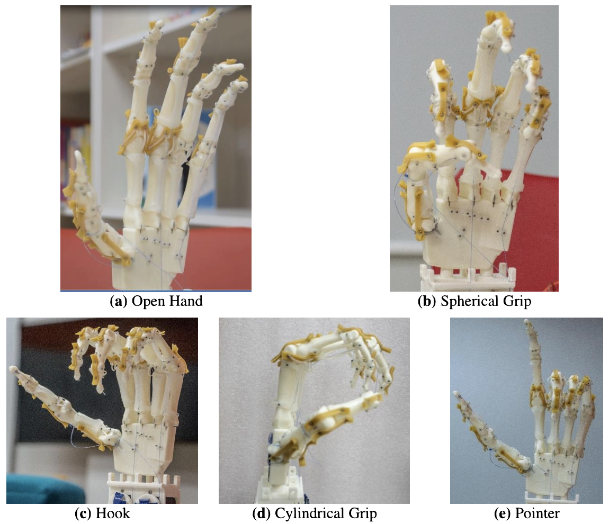
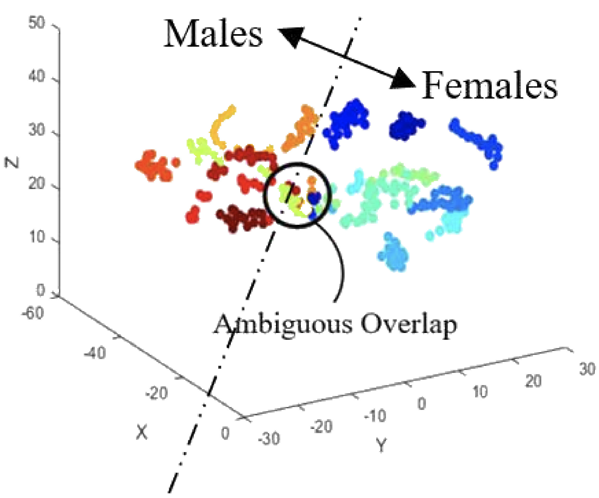
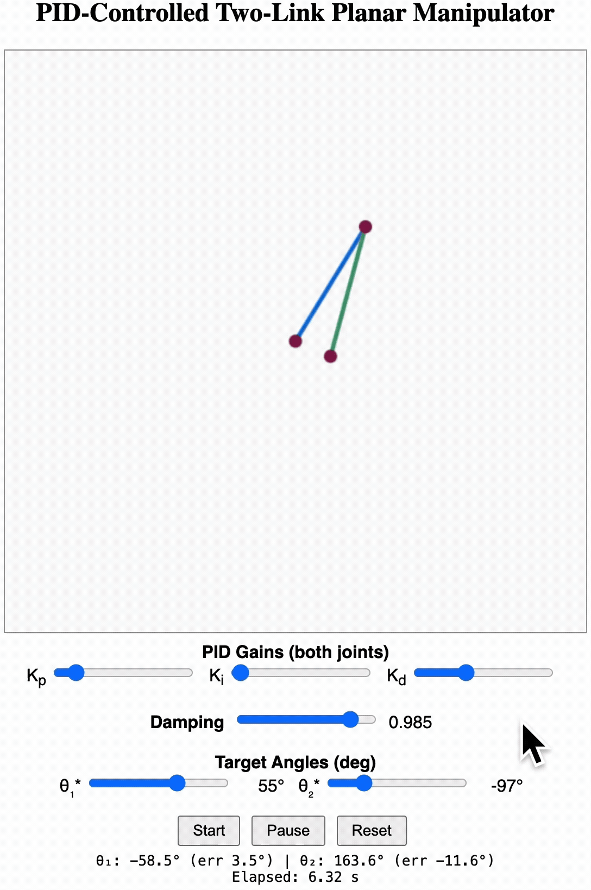
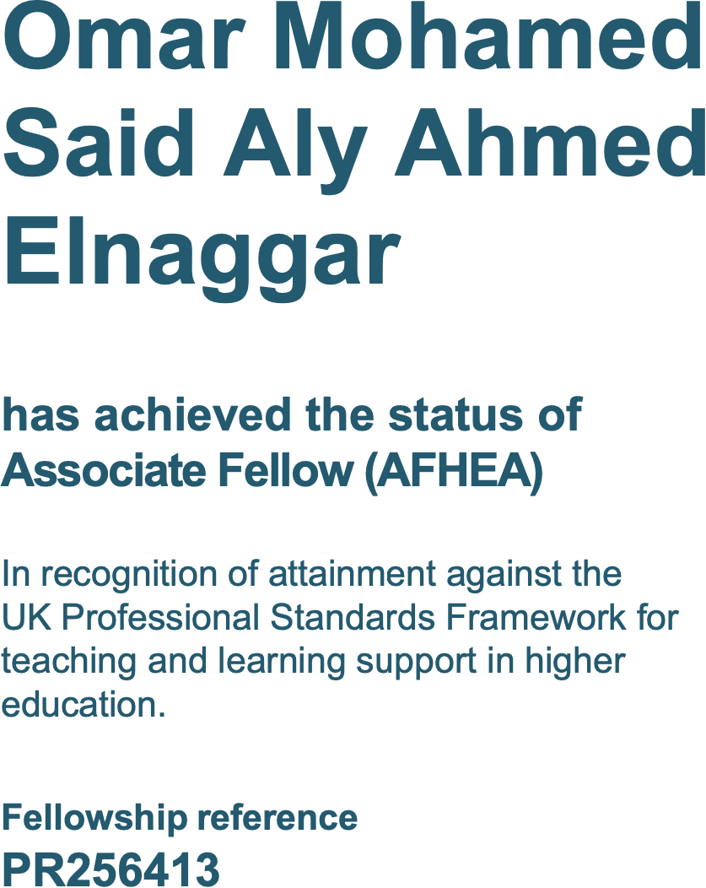
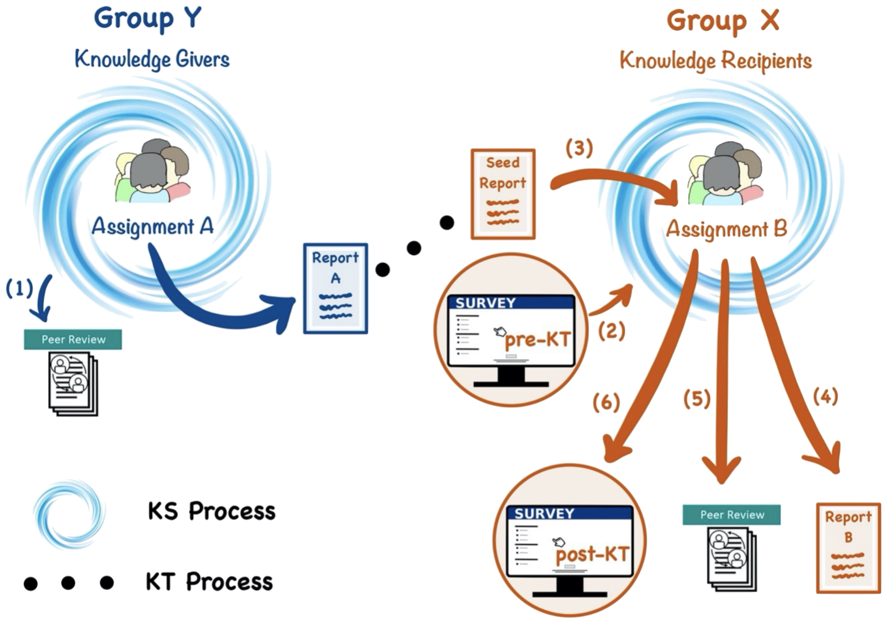
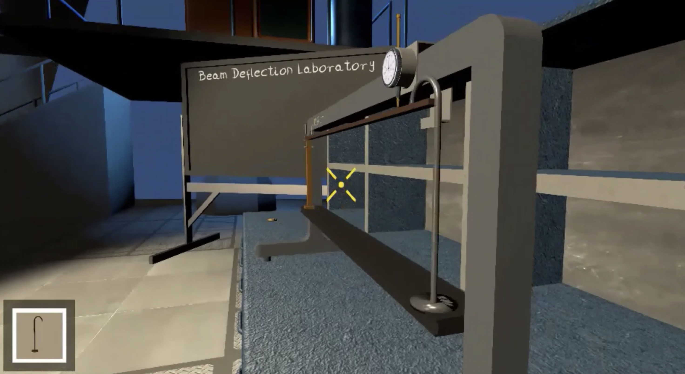
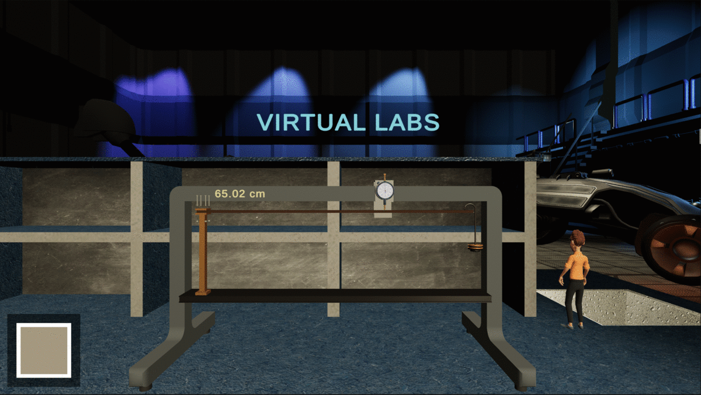

I study Human Biomechanics with Sensing & Modelling
I dig the Science behind Teaching & Learning
I build Solutions with Entrepreneurship
PhD in Mechanical, Materials and Aerospace Engineering (2019 - 2024), University of Liverpool, UK
Intelligent Wearable Sensing for Human Sleep Posture Classification and Temporal Analyses
Under the supervision of Paolo Paoletti, Frans Coenen and Andrew Hopkinson
MEng in Mecharonic Engineering (2015 - 2019), University of Nottingham, UK
Curriculum Vitae
elnaggar.omar@outlook.ac.uk
Research
Research Skills Portfolio

Human Motion Analysis for Healthcare

Studying the posture and motion of musculoskeletal systems finds many applications that bring about a higher quality of life to both healthy and physically disabled adults. My research focuses on the creation of AI-empowered wearable sensors which analyse human sleep posture potentially linked to the development of certian musculoskeletal morbidities.
Augmented Reality and Motion Capture
Body Motion Capture

Facial Motion Capture

Human motion capture is bewildering for some of us. Augmented Reality (AR) is increasingly becoming a universal and exciting language, turning information into experiences. I believe AR is an eminently useful tool to communicate my research to everybody; the technical expert and the enthusiast.
Biorobotic Prostheses

Prosthetics are faced by many challenges such as limited dexterity and cumbersome control scheme. This individual project successfully delivered a highly biomimetic, bio-robotic hand prosthesis. Structurally, the prosthesis consist of rigid and soft parts which were additively manufactured via multi-material 3D-printing. The design is inspired from a laser/MRI-scanned cadaver hand. Additionally, a myoelectric control scheme is implemented to allow for different hand postures/grasps as intended by the amputee.
Natural Language Processing

State-of-the-art speaker identification systems have achieved accuracies up to 100% with long-duration utterances which are not always available. In this work, a novel speaker recognition approach is proposed using short-utterance recordings (<1 sec). This is made possible with the parametric AI-based dimensionality reduction which produced the above 3D visualisation of speaker-dependent features, demonstrating inter-speaker separability.
Teaching
Interactive Teaching Materials
I design and develop interactive materials for my students to engage with, creating exploratory learning experiences. Below is an example in action, where I used sliders and real-time display to help students understand and visualise robot control. These interactive modules promote active exploration of complex concepts, allowing learners to experiment on their own and gain deeper insights through experimentation rather than passive observation. At a recent Advance HE Conference, I proposed and presented a novel framework that streamlines the creation of such materials, enabling educators to design, generate, customise, and deploy interactive materials rapidly without extensive knowledge of IT tools.

Recognised Educator and Associate Fellow of Advance HE
While pursuing my PhD degree, I was awarded the Associate Fellowship of the Higher Education Academy (Advance HE), a mark of professional contributions to teaching and learning. This recognition affirms my commitment to the development of educational technologies, evidence‑informed pedagogy, inclusive curriculum design, and student‑centered mentorship. It underscores my dedication to ongoing reflective practice and continuous improvement in higher education.

Evaluation of Knowledge Exchange (KE) in Classrooms using AI
Little attention is paid to the value of incorporating KE in classroom teaching, leaving students out of the current KE pipeline. This project attempts to meeasure the effectiveness of the KE process in which teacher-to-student and peer interactions play a major role. A coursework-based framework was designed such that two checkpoints reflect a before-and-after abrupt change scenario which is common in industrial environments. Then, a survey-based approach was adopted to measure students’ knowledge at each checkpoint. With the aid of an AI-based visualisation technique, we are able to extract insights from a low-dimensional map, supported with standard metrics, to gauge the individual’s knowledge and how they are positioned within the entire population of students.


Startup: Engineering Virtual Labs
of UCL's "Build Your Own Business 3" Pitch Contest 2021
(aka Launch £10,000 Programme)
COVID-19 disrupted the higher education landscape which consequently enforced a shift towards a more blended teaching and learning approach and accelerated the digitalisation of education. At the core of digital education is the element of practical sessions which brought teachers to think about how to maintain student engagement in the digital world. Motivated by the limited available solutions, I took the initiaive of building specialised virtual labs for engineering courses empowered by 3D Game Development and gamification. My work received positive feedback from academics in/out of the United Kingdom, therefore I am currently working on a startup company which should launch soon.


Teaching Experience: Summary and Highlights
- Served as a Graduate Teaching Assistant (2020–2024) and Postdoctoral Teaching Associate (2024–Present) at The University of Liverpool.
-
Taught across five BEng/MEng programmes:
- Mechanical Engineering
- Aerospace Engineering
- Mechatronics & Robotic Systems
- Electrical & Electronic Engineering
- Civil & Structural Engineering
-
Delivered core modules in multidisciplinary areas:
- Engineering Mathematics & Computing
- Computational Methods in Engineering
- Experimental Methods
- Signal Processing & Digital Filtering
- Digital Control & Optimisation
- Neural Networks
- Robotic Systems
- Dynamic Systems
- Designed and delivered in‑person and virtual sessions, boosting attendance by 15 %.
- Developed and led hands‑on laboratory sessions, resulting in a 95 % student pass rate.
- Standardised and demonstrated over 40 sessions using SOPs and pre‑lab briefs, with no safety incidents.
- Assessed and provided personalised feedback, earning acclaim in student evaluations.
- Shadowed module coordinators in tutorials and seminars, addressing student queries and fostering critical thinking.
- Co‑designed new MATLAB/Simulink workshop series, resolving long‑standing issues from previous years.
- Fully proficient with virtual learning environments, particularly Moodle and Blackboard.
@ School of Engineering, University of Liverpool, UK
Guest Lectures (Teaching)
- Guest Lecture: Sensors and Perception in Robotics, University of Sheffield (Feb 2022-25)
- Guest Lecture: Stochastic Processes, University of Sheffield (Dec 2020).
Publications
Research Publications
- K. D'Aout, O. Elnaggar, A. Rowlatt, C. Brockett, A. Sharp, and C. Willems, The Ageing Human Heel Pad: Assessing Mechanical Behaviour in the Lab and in the Field, Society for Experimental Biology (SEB) Annual Conference, 2025. [ Link to Abstract Book]
- A. Rowlatt, O. Elnaggar, and K. D'Aout, Impact of ageing on the heel pad: ultrasound imaging of the macrolayer, microlayer and skin, Footwear Science, 2025. [ Link to Paper]
- O. Elnaggar, A. Rowlatt, and K. D'Aout, Reliability of Shore Hardness as a Surrogate for Heel Pad Stiffness: A Correlative Study Using Ultrasound Imaging, Congress of International Society of Biomechanics, 2025. [ Link to Abstract]
- K. D’Aout, O. Elnaggar, L. Mason, A. Rowlatt, and C. Willems, Footwear choice and locomotor health throughout the life course: a critical review, Healthcare, 2025. [ Link to Paper]
- O. Elnaggar, A. Hopkinson, F. Coenen, and P. Paoletti, Sensor-enabled Sleep Posture Analysis: State-of-the-art and Opportunities of Wearable Technologies from Clinical, Sensing and Intelligent Perception Perspectives, Biomedical Robots and Devices in Healthcare: Opportunities and Challenges for Future Applications, 2025. [ Link to Paper]
- O. Elnaggar, R. Arelhi, F. Coenen, A. Hopkinson, L. Mason, and P. Paoletti, An interpretable framework for sleep posture change detection and postural inactivity segmentation using wrist kinematics, Scientific Reports, 2023. [ Link to Paper]
- O. Elnaggar, F. Coenen, A. Hopkinson, L. Mason, and P. Paoletti, Sleep Posture One-Shot Learning Framework based on Extremity Joint Kinematics: In-Silico and In-Vivo Case Studies, Information Fusion, 2023. [ Link to Paper]
- O. Elnaggar, F. Coenen, A. Hopkinson, L. Mason, and P. Paoletti, Sleep Posture Classification: From In-Silico Proof-of-concept to Validation with Wearable Sensors, Insigneo Showcase, United Kingdom, 2022. [ Link to Poster]
- O. Elnaggar, F. Coenen, A. Hopkinson, and P. Paoletti, Generalised Joint Kinematic Analysis and 3D Visualisation: A Human Wrist Case Study, BioMedEng22 Conference, United Kingdom, 2022. [ Link to Abstract]
- O. Elnaggar, F. Coenen, A. Hopkinson, and P. Paoletti, Perception of Sleeping Poses Using Extremity Limb Orientations, BioMedEng21 Conference Proceedings, United Kingdom, 2021. [ Link to Abstract]
- O. Elnaggar, F. Coenen, and P. Paoletti, In-Bed Human Pose Classification Using Sparse Inertial Signals, 40th International Conference on Innovative Techniques and Applications of Artificial Intelligence, Springer, Cham, 2020. [ Link to Paper]
- O. Elnaggar, F. Coenen, and P. Paoletti, Wearable Sensing For Non-invasive Human Pose Recognition During Sleep, AI for Future Digital Health Workshop, SGAI 40th International Conference on Artificial Intelligence, 2020. [ Link to Video]
- O. Elnaggar, and R. Arelhi, A New Unsupervised Short-Utterance based Speaker Identification Approach with Parametric t-SNE Dimensionality Reduction, International Conference on Artificial Intelligence in Information and Communication (ICAIIC), Japan, 2019. [ Link to Paper]
- O. Elnaggar, and R. Arelhi, An Unsupervised Speaker Identification Approach: A Breakthrough 3D Visualization of High Dimensional Features, 21st International Conference on Artificial Intelligence and Pattern Recognition (ICAIPR), Singapore, 2019. [ Link to Paper]
Teaching Publications
- O. Elnaggar, and R. Arelhi, A Generative AI-empowered Framework for Creating Interactive Learning Materials Without Prior Technical Expertise, AdvanceHE Teaching and Learning Conference, United Kingdom, 2025. [ Link to Abstract]
- O. Elnaggar, and R. Arelhi, Game-based Learning in Engineering Education: How can we reconcile seemingly conflicting interests of students, academics, universities and national policy makers?, BERA (British Educational Research Association) Conference, United Kingdom, 2022. [ Link to Abstract]
- O. Elnaggar, and R. Arelhi, Design and Development of Game-based Learning for Virtual Engineering Laboratories: Two Case Studies, AdvanceHE Teaching and Learning Conference, United Kingdom, 2022. [ Link to Abstract]
- O. Elnaggar, and R. Arelhi, Quantification of Knowledge Exchange Within Classrooms: An AI-based Approach, 9th European Conference on Education, United Kingdom, 2021. [ Link to Paper]